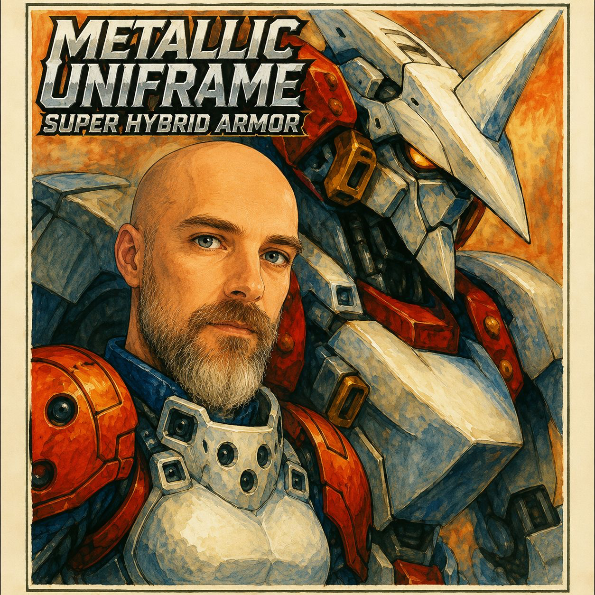

Autorretrato como piloto — tributo ao cult classic da Compile de 1990 para Sega Genesis. Um dos shoot 'em ups mais subestimados de sua era, com trilha sonora de Toshiaki Sakoda que empurrou o Yamaha YM2612 aos seus limites. Nunca o joguei completo na minha juventude — apropriei-me dele culturalmente através de sua música, sua narrativa e seu tema final "For the Love Of...". Algumas obras merecem viver no seu cânone mesmo quando o controle nunca chegou totalmente às suas mãos.